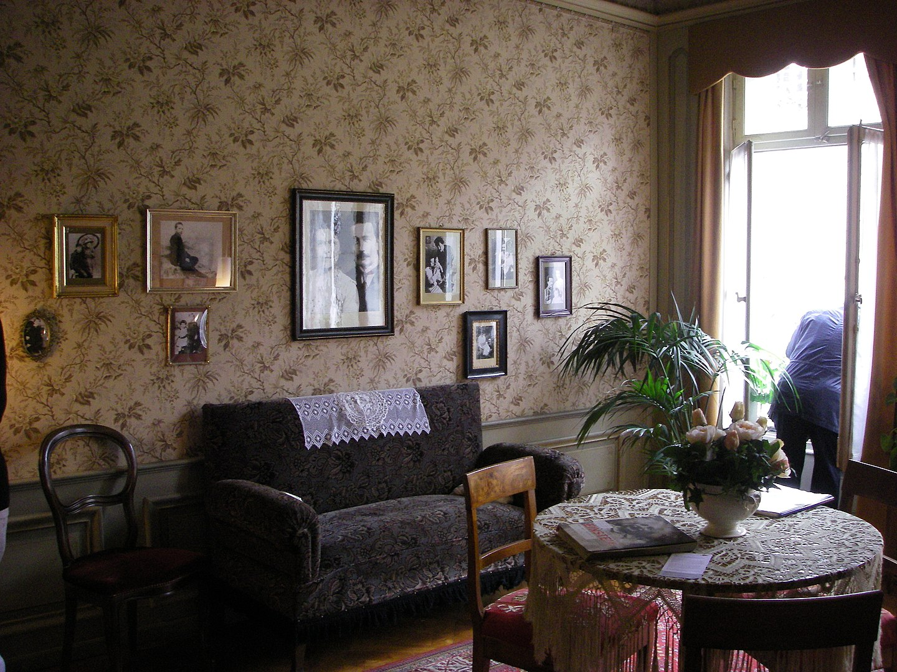

Multiple disciplines
Albert Einstein is best known for his contribution to science. One prominent contribution is his formulation of E=MC². This formula refers to Einstein's theory of relativity; a concept that has proven quite foundational to modern physics.
However, did you know that Einstein's interests went beyond the realm of science? He theorized about very different disciplines. His poetic quotes illustrate his affiliation with the arts and social sciences alike.
Holistic learning
Because of these varied interests, Einstein conversed with academics from other disicplines; it seems that he had quite an open, holistic mind to learning. This backdrop explains the origins of the Olympia Society.
Physics & math lessons
In 1901, Einstein placed a newspaper advertisement, offering private lessons in physics and math. One of those who responded, was Maurice Solovine. Solovine had quite little affiliation with Math or Physics, and was a student of philosophy. However, he had a deep desire to learn about the "real nature": instead of "Philosophy, Ancient Greek and Literature" he wanted to learn "Mathetmatics, Physics and Geology" 1

The interior of Einstein's house in Bern, Switserland. It was in this house that the Olympia Academy converged and debated about a variety of topics
While Solovine and Einstein did discuss physics and math, the private lessons never really materialized. Instead, Solovine and Einstein had lengthy discussions about a wide range of phenomena and books from many different disciplines.
More members
Not long after Solovine and Einstein started debating recurringly, they were joined by Einstein's neighbour; a mathematician named Habicht. They were joined by others too, at later times. But, their presence was rather temporary in nature.
References
Two of my most useful references are as follows:
1. Solovine, Maurice. “Freundschaft Mit Albert Einstein.” Physik Journal, vol. 15, no. 3, 1959, pp. 97–103.
Accessed through the Wiley Online Library.
2. Highfield, Robert. The Private Lives of Albert Einstein. Faber & Faber, 1994.
Accessed through the Internet Archive.